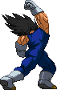


Uppercut
Main tool for launching enemies into the air after which you can persue them (by pressing Up) with an aircombo.
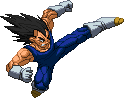


Standing Strong Kick Banger
Standing combo extender. Standing Strong Kick can link into itself once.
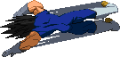
Wolverine Sweep
A low lunging attack that knocks the opponent down on impact,
but leaves you quite open if blocked.
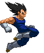


Extended Jumping Weak Kick
You're able to hold down the knee kick, so it remains able to hit an opponent
all the way until Vegeta lands, based off how jumping Light attacks worked in Street Fighter 2.
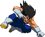


Jumping Medium Punch chain
Air combo extender.
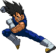
Piston Kick
Main tool for smashing opponents down to the ground during an aircombo. If an aerial opponent is hit by this move, they'll
fly to the ground and then bounce up upon impact allowing for a juggle oppertunity.
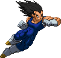

Backdash Elbow
Alternate dashing elbow attack. After performing the backflip backdash, Vegeta dashes forward with the elbow attack
which can be chained into standing/crouching medium attacks, making it a pretty sweet combo starter. Can be chained into from his Focus Attack; as soon as the Focus hits,
input the b,b+SP and Vegeta performs the move, albeit a slightly alternate version; he does a small hop instead of the backflip, to make it come out fast enough to combo.
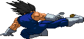

Dashing Slide Kick
A dashing low sweep attack that can catch the opponent off guard. Trips the opponent's legs and sends them a bit into the air, creating a nice juggling oppertunity.
Can be cancelled into from his Focus Attack as with nearly all 'running' attacks. Vegeta can link the Machine Gun Temper into the Sliding Kick by imputting the f,f+SK command at the
end of the Machine Gun Temper but be aware that you'll be fully committing to the forward dash and attack.
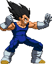


Ki Blast
Vegeta comes armed with his own variation of the Ki Blast.
He's able to charge up this blast; hold down the punch button to do so and release to fire it (and it'll fire automatically once it's charged up to the maximum).
There's two levels to this (the uncharged version would be the LV0 version): LV1 is a blue/yellow blast that hits twice. LV2 is a blue/purple blast that hits three times.
The EX version immediately fires a blast identical to this LV2 version. You're able to cancel into the EX version either after the first or second Ki Blast.
You would do so with the command forward+2 Punches. The stand-alone version would be done with QCF+2P.
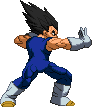


Machine Gun Temper
Vegeta shoots a volley of 4 Ki Blasts. As to be expected, the Light version's projectles are slow, while the Strong version's are fast.
The aerial version has Vegeta shooting the blasts vertically at the ground. The LP version kills all his horizontal momentum while the MP version does so just a bit and the SP doesn't slow you down at all.
Both the standing and aerial variants have an EX version. Ki Blasts can be cancelled into the EX Machine Gun Temper but only while you're in Rage Mode.
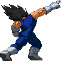
Firecracker
A quick version of his Dirty Fireworks attack, Vegeta points into the air and makes an explosion happen.
The distance of it is farther away from him the stronger the Punch button used. Fun to juggle the opponent with.
The EX version creates a string of three larger explosions.
Even though it's an anti-air by design, the EX version's first explosion can hit standing opponents too, if they're tall enough.
Bonus tip: you can cancel the EX Firecracker into the EX Ki Blast.
The regular versions can also be cancelled into the EX Ki Blast but only while in Rage Mode.
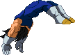

Wolverine Flip
Versatile move. The Flip can act as a suprise move, a combo tool and even as an anti-air of sorts.
The Weak version is fast (and has really fast recovery) but has little range, while the Strong version takes a while to come out but has more range.
You're able to go either forward (with QCF+K) or backward (with QCB+K). Follow-up options are as follows;
-hold Back = Backward Dash. He performs his backdash upon landing.
-hold Up = Super Jump. He performs a Super Jump upon landing.
-hold any P = Dashing Elbow. He performs a straight dashing elbow, hits mid.
-hold Back, then SP = Extended Backdash Elbow. He does the backdash flip and then the dashing elbow. However this elbow cannot be Special/Super cancelled.
-hold any K = Wolverine Sweep - Identical to his crouching Strong Kick, although he now has three different ranges available.
The Wolverine Flip has gained EX versions as well. QCF+2K results in a Flip followed immediately with a launching double swoop kick. QCB+2K results in a quick flip backwards followed by a downwards diagonal Ki Blast fired while automatically quickly jumping backwards.
For both these EX versions, you can still make the same follow-ups come out by holding the corresponding command, except with the EX Forward WF if it hits.
-hold Back = Backward Dash. He performs his backdash upon landing.
-hold Up = Super Jump. He performs a Super Jump upon landing.
-hold any P = Dashing Elbow. He performs a straight dashing elbow, hits mid.
-hold Back, then SP = Extended Backdash Elbow. He does the backdash flip and then the dashing elbow. However this elbow cannot be Special/Super cancelled.
-hold any K = Wolverine Sweep - Identical to his crouching Strong Kick, although he now has three different ranges available.
The Wolverine Flip has gained EX versions as well. QCF+2K results in a Flip followed immediately with a launching double swoop kick. QCB+2K results in a quick flip backwards followed by a downwards diagonal Ki Blast fired while automatically quickly jumping backwards.
For both these EX versions, you can still make the same follow-ups come out by holding the corresponding command, except with the EX Forward WF if it hits.
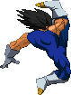
Bomber Kick
This used to be the follow-up for Rising Knee Arrow and it still works like that,
however it's now changed into a stand-alone attack on top of that. It kind of works as an aerial Wolverine Flip
as it has some of the same follow-ups as that; hold any Punch button to bust out a Dashing Elbow and any Kick button for a Wolverine Sweep, both upon landing.
The all-new EX version causes a ceiling-bounce on impact and can do these same follow-ups.
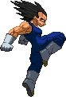
Rising Knee Arrow
This is an anti-air attack and a combo tool. The EX version bulks to move up to a 3-hitter.
Besides being able to special-cancel it into the aerial Machine Gun Temper or Bomber Kick, you can super-cancel it into any of his aerial Supers.